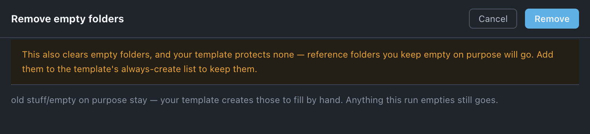

Empty folders
Removes the folders in the After Effects project that hold nothing — except the ones your template creates on purpose and the ones you tagged Protected.
Use it when
- A reorganize, a delete or an afternoon of dragging has left folders standing with nothing in them.
- You imported another
.aep, consolidated it, and its folder shell is still there. - You are about to hand the project on and want the Project panel to show only folders that hold something.
- You want the sweep on its own, without running Organize — which does it as part of its work.
What it does
Walks the whole project and removes every folder that holds nothing at any depth. Three things survive: folders on the template's Always create list, folders tagged Protected, and any folder that is an ancestor of one of those — vector cannot go while vector/ref has to stay. It acts on click, it never asks, and it is one ⌘Z.
What it does not do: it does not touch anything that is not a folder, it does not move anything, and it does not touch directories on disk — those are Sort disk's.
Do it
- Press Empty folders. There is no sheet — it is the whole project, always.
- Read the footer. It says what happened, as figures: removed 4 empty folders, or nothing to do.
Scope. The whole project. This tool takes no selection and offers no options, so nothing about it changes between one press and the next.

What you'll see
| What it means | |
|---|---|
| Empty folders, in the Remove group | Point at it and the footer reads Remove empty folders · removes things. There is no count at rest — the number cannot be known until the folders are read. |
| removed n empty folders | The footer after a run. |
| nothing to do | Nothing was empty. That is not the same as nothing being removable — see below. |
Undo
One ⌘Z. Nothing on disk changes.
Watch out
Things you might not think to do
- Run it after deleting things by hand. Deleting a comp in the Project panel leaves its folder behind; this is the one press that clears the shells.
- Run it after Consolidate. Consolidate sweeps only the folders its own work emptied, by design. If the imported project left other empties behind, this reaches them.
- Use it as the check on your template. If it removes a folder you wanted, that folder was not on the Always create list — and now you know to add it.
Pairs with
Organize, which runs the same sweep as part of its work. Set up each project for Protected, and Set up once for Always create — the two ways a folder survives.